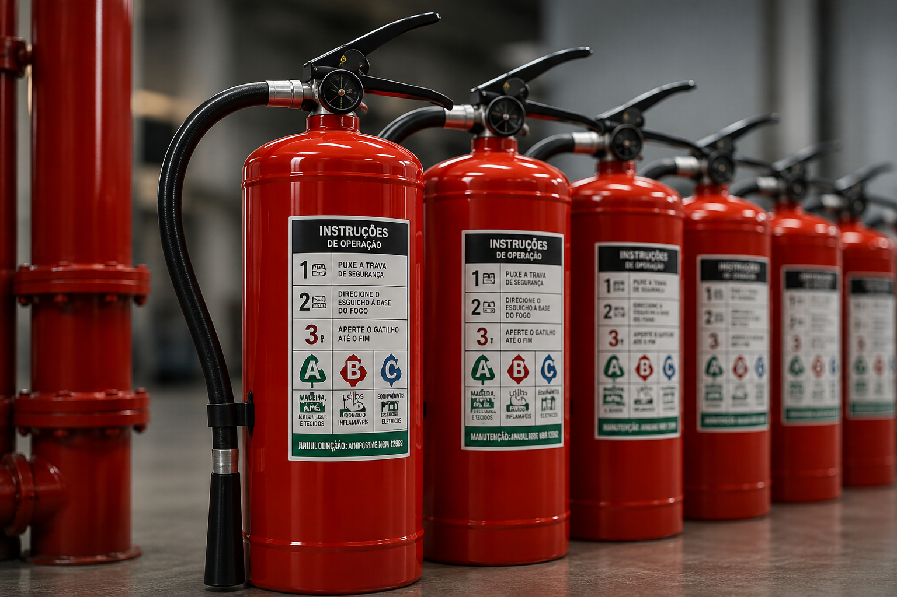
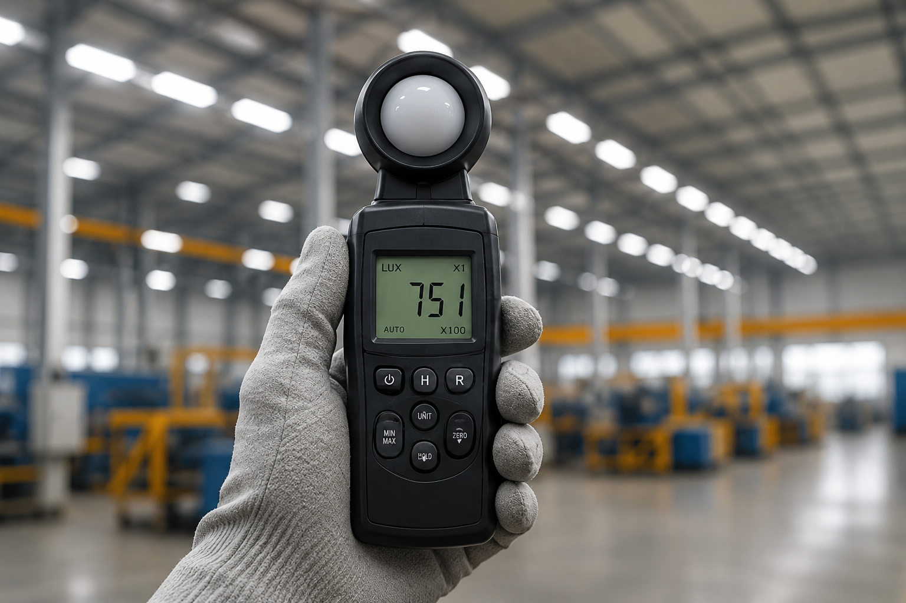

01
CLCB / AVCB
Regularização junto ao Corpo de Bombeiros, projetos, documentos, vistorias e renovação.
Regularização empresarial com responsabilidade técnica
CLCB, AVCB, PGR, LTCAT, eSocial SST, laudos e consultoria técnica para empresas de Amparo e região.
Nossas soluções
Atuamos na elaboração, gestão e renovação de documentos obrigatórios para sua empresa operar com segurança, dentro da lei e sem interrupções.
Ver todos os serviços →Regularização junto ao Corpo de Bombeiros, projetos, documentos, vistorias e renovação.
Programa de Gerenciamento de Riscos conforme NR-01 para sua empresa.
Laudo Técnico das Condições Ambientais do Trabalho e documentos com embasamento técnico.
Organização dos eventos SST, documentação e apoio para evitar inconsistências.
Inspeções, pareceres e laudos técnicos para atender exigências legais e técnicas.


Serviços técnicos
Serviços pensados para comércios, clínicas, escritórios, prestadores de serviço, galpões, pequenas indústrias e empresas que precisam resolver pendências técnicas.
Regularização junto ao Corpo de Bombeiros, análise de enquadramento, orientação documental e apoio técnico para emissão ou renovação.
Programa de Gerenciamento de Riscos com inventário, plano de ação e organização das informações de segurança ocupacional.
Laudo Técnico das Condições Ambientais do Trabalho para caracterização de exposição a agentes nocivos e suporte previdenciário.
Organização das informações de Segurança e Saúde no Trabalho para eventos obrigatórios e documentação compatível.
Inspeções, avaliações, pareceres e documentos técnicos para apoiar decisões, adequações e comprovação de conformidade.
Orientação técnica para empresas que não sabem por onde começar ou precisam entender exigências legais e operacionais.
Método de trabalho
Você entende o que será feito, por que será feito e quais documentos ou providências serão necessários.
Começar pelo WhatsAppVocê chama no WhatsApp, informa a cidade, atividade, tipo de imóvel e qual pendência precisa resolver.
Verificamos o serviço adequado, documentos existentes, urgência, necessidade de vistoria e possíveis caminhos.
Você recebe orientação clara sobre escopo, prazo, documentos necessários e valor do serviço.
Elaboração de laudos, programas, relatórios, orientações e acompanhamento conforme o serviço contratado.
Entrega da documentação e explicação dos próximos passos.
Para quem atendemos
Área de atendimento
Atuação regional com deslocamento programado conforme a necessidade do serviço técnico.
Perguntas frequentes
As respostas abaixo são gerais. O enquadramento correto depende da atividade, do imóvel e dos documentos existentes.
É o Certificado de Licença do Corpo de Bombeiros, usado para edificações que se enquadram em critérios simplificados de segurança contra incêndio.
O enquadramento depende de características como área, altura, ocupação, risco, carga de incêndio e exigências aplicáveis.
Grande parte das empresas precisa manter documentação de gerenciamento de riscos ocupacionais.
Não. O PGR está ligado ao gerenciamento de riscos ocupacionais; o LTCAT tem finalidade previdenciária.
Contato
Envie uma mensagem com a cidade, atividade da empresa e qual documento ou pendência precisa resolver.